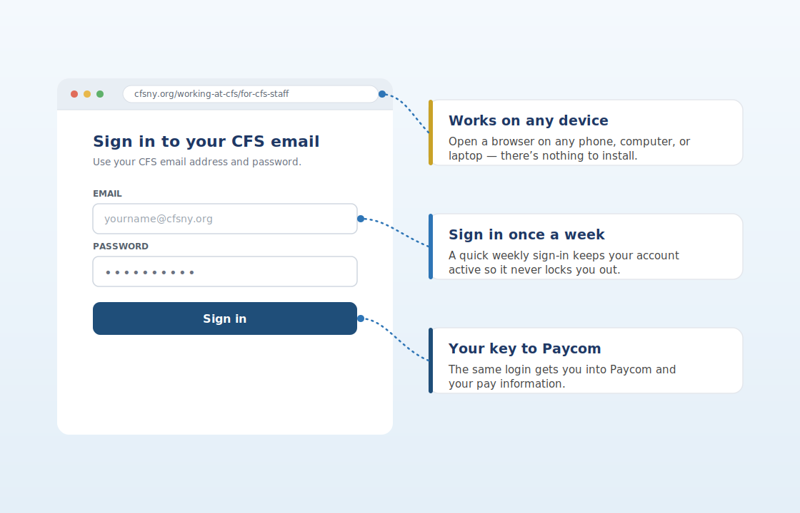

One quick tip. About a minute to read. Something you can use today.
This Week’s Tip
Sign into your CFS email at least once a week. It takes about 30 seconds and keeps your account from getting locked — right when you need it most.
Why it matters
Your CFS email is the key to everything that matters at work — including Paycom and your pay information. For security, accounts that sit unused for a long stretch get locked automatically, and that surprise lockout always seems to land at the worst possible moment. Signing in once a week keeps your account active, keeps your password fresh in your memory, and keeps you out of the Help Desk queue.
How to do it (works on any phone or computer)
Make it stick
The easiest way to never get locked out is to make signing in routine. Tie it to something you already do each week — checking your schedule, or payday — and give your inbox a quick look while you’re there. A minute a week now saves a stressful scramble later.

Signing in from any browser works the same on every device — no app required.
Try an AI prompt this week
Open Copilot Chat in Outlook or Teams.
Past issues live on the CFS intranet — IT Help & Resources.
Have a topic idea or question? Email HelpDesk@cfsny.org.
— Jim Noriega and the CFS IT Team